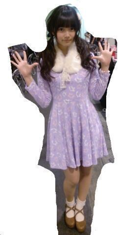
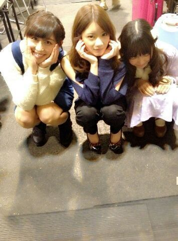

| 2014/01 07 Tue | ひめたん(*>ω<*)そ の392 |
日曜日は名古屋握手会でした＊＊
年始一発目、忙しい中
来てくださった方ありがとうございました！
道混んでたよねーちゃんとおうち帰れたー？
＼ いつものことながら雑な加工でごめんね ／

earth music&ecologyだよー
ガーリーな感じで
かわいらしいです(＊^ω^＊)
みなさんお気づきになられたかわからんけど
ワンピースは なんとりぼん柄！
写めじゃ見えないけど
白りぼん新調してみました♪♪
そうっ
最近ねーおにゃーのこがね
握手会にりぼんして来てくれるの
めーちゃ嬉しいんだよー(〃ω〃)
おとこのこもたまに
蝶ネクタイしてくれるんだよー
お揃いよー嬉しいよーありがとね☆
それから、ひめたんが
ぴんく好きーみなさんもぴんく着てーて
言ってたからかな
ひめたんレーンはぴんく率が
みんなより高いと思うの∩( ^ω^ )∩
もうねー握手してて るんるんする♪♪
ありがとうねー
まだ着たことないって方もいつか挑戦してみてねー
そして、はじめましての方が多かった！
会いに来てくれて本当にありがとう( ^ω^ )
これからよろしくねー
もっともっと仲良くなりましょーうっ
いつも来てくださる方も いつもありがとうね
今年もよろしくお願いしますっ
さてー乃木のの出ました(笑)
ごーめん過去形になってる(笑)
アメブロの方では告知したんだけどな
みなさんきいてくれましたかなー？
乃木のの楽しい(｀・ω・´)ノ
カフェラテとカフェモカの違いは
万理華 (伊藤万理華ちゃん)に教えてもらいました
カフェラテはコーヒーをミルクで割るじゃん
カフェモカはビターチョコが入ってるんですよ
どうかなーみんなわかったかなー？
前回の乃木どこは隠し芸大会やりましたよー
ひめたんは来週！のはず！みてねー

この写め なんかめっちゃすき！

 武道館で1番感動した場面はどこですか！？
武道館で1番感動した場面はどこですか！？
ラストの「君の名は希望」を
みなさんと一緒に斉唱したこと。
みおちゃんのMC込みで
泣きそうになりました(´；；｀)うるる
ひめたんは電車の中で
つり革にがっつり頼るタイプ？
それとも強靭な足腰とバランス感覚だけで
耐えるタイプ？
がっっっつり捕まります＊
なんなら両手でがっつり捕まるっ
姫たんの好きな方言教えてください！
おとこのこの関西弁と
おにゃのこの九州なまりがすき(＊^ω^＊)
どっちもなんかかわいらしい感じする！
てゆか姫たんって姫たんって！
なんかきゅんってした！
 ひめたんは牛肉鶏肉豚肉馬肉の中で
ひめたんは牛肉鶏肉豚肉馬肉の中で
どれが一番好き？
ちなみに僕はドーナツが好きです(真剣な眼差し)。
そうだなーえっとね
ひめたんは鶏肉がすきです！
どーだぷりんって言うと思ったか｀・ω・´
ねぇ、ひめたんってマックとか
ファミレスとかいくの？
行くよー？
ひめたんを何だと思ったのー？
......ってドヤ顔で書きながら考えたけど
あんま行かないかも
いや、でも、行くことにはいくよ！
ひめたんって
濃硫酸とさ希硫酸どっちがすき？←
えーっと......そうですね
どっちもおんなじくらい好きです
理由は聞かないで(´・ω・｀)ね？
ひめたんはバンドするならどの楽器やりたい？
あんま詳しくないんだけど
ひとつ挙げるならギターかなー
けいおん！の唯ちゃん的ポジションに憧れます♪♪
ひめたん的にあんパンつぶすのは
good?それともbad?
だっめっでっすっ
ぱんは ふわふわしてるから ぱんなのにー！
ぱんが泣くよ(´；ω；｀)痛いってよ
ひめたんは飲んだあとの空き缶
潰しちゃうタイプ？？
つぶさない。いくらひめたんだからって
そんなことはしないです
そのまんまキレイなまんま捨てる。
ひめたんのブログの
コメント欄下２ケタに46を踏んだ方へ
手書きでコメ返するコーナー
＼ ひめたん46 ／

いつもコメントありがとうございますっ
そうそう、読んでて思ったんだけど
わんちゃんのクイズだけどさ
◎おにゃーのこ
◎６才
◎ヨーキー
的なこと書いてたと思うけど
３択から選んでねってことじゃないの！
ヒントよ！ヒントよ！
それから最後に
更新するペースぐだぐだなってる(´；；｀)
ごめんねー気をつけるね。
(＊´・ω・＊)
コメント(481)
2014/01/07 23:24